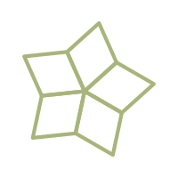
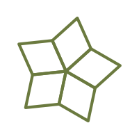
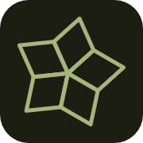
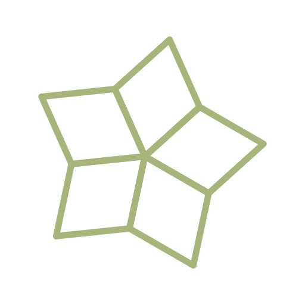

Contorno sage inclinado 12°, na paleta do seu portfólio. Tudo em /logo. Prévias abaixo.




<!-- favicons (troque por prefers-color-scheme se quiser) -->
<link rel="icon" type="image/svg+xml" href="/logo/sun-logo.svg">
<link rel="icon" type="image/png" sizes="32x32" href="/logo/favicon-32-dark.png">
<link rel="apple-touch-icon" href="/logo/apple-touch-icon.png">
<!-- logo no header: usa currentColor, então segue a cor do tema -->
<a class="brand" href="/">
<img src="/logo/sun-logo.svg" alt="logo" width="32" height="32">
</a>
<style>
.brand img{ color: var(--accent); } /* claro: #6b7a3f · escuro: #a8b57a */
</style>